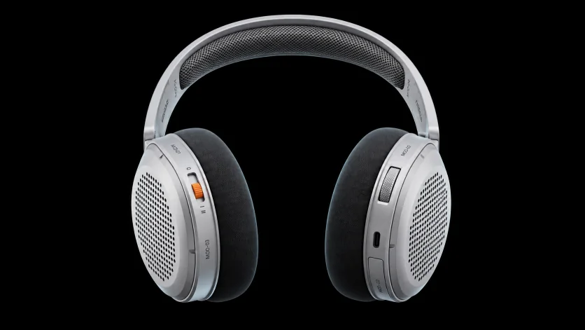
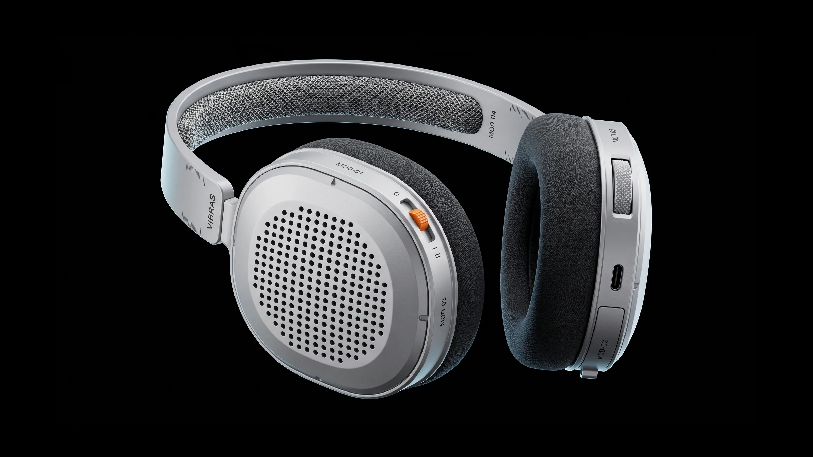
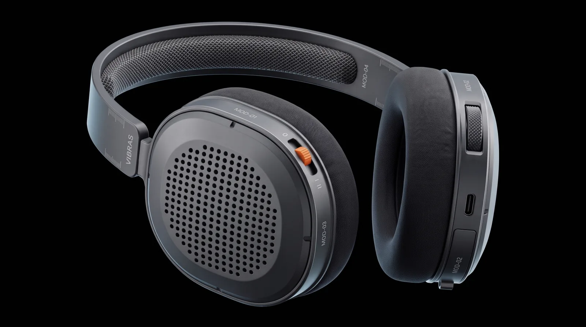

Vibras Modular
Ultra-precision over-ear monitor built from CNC bead-blasted aluminum. 100% modular architecture. Zero proprietary screws. Infinite lifecycle repairability.
Aluminium outside.
Nothing glued inside.
MOD-01 acoustic chamber. Bayonet twist-and-lock coupling, solid CNC 6061 bead-blasted shell. Off in under 4 seconds, no tools.
A battery you pull out,
not throw away.
MOD-02 Li-ion cartridge. Quick-release pull-tab on a spring-loaded pogo-pin bus. Hot-swap without stopping the music.
Controls you can
feel in the dark.
MOD-04 control yoke. Diamond-knurled volume dial and a 3-position ANC slider in safety orange: Off, Transparency, Active.
Four modules. Zero tools.
Engineered for Pure Transparency.
Laboratory acoustic measurements and physical tolerance benchmarks calibrated to reference studio monitors.
Four Decoupled Subsystems.
Acoustic Chamber
CNC-machined aluminum shell containing the 40mm driver and micro-perforated acoustic grille. Twists off in 90 degrees.
Power Cell
Recessed lithium cartridge with textile pull-tab and gold pogo-pin interconnect. Swap without interrupting ANC.
Knit Cushion Stack
High-density acoustic memory foam encased in breathable charcoal textile. Auto-centers via 8 neodymium magnets.
Headband Core & ANC
Spring-steel yoke encased in braided steel mesh. Houses dual digital signal processors and the orange 3-position toggle.

The battery
is a part.
The door below the USB-C port opens by hand. Pull the orange tab and the cartridge slides off its pogo pins. A spare goes back in the same way. The headphones outlive the cell.
- LOCATIONCUP BASE // BELOW USB-C
- CELL850 MAH LI-ION // MOD-02
- SWAP2 S // NO TOOLS

Reassembled.
The four modules lock back into a single frame. Bead-blasted aluminium cups, braided steel-mesh headband, magnetic knit cushions.
- LEFT CUPANC SWITCH // MOD-04
- RIGHT CUPCONTROL WHEEL // USB-C
- CUP BASEBATTERY CARTRIDGE // MOD-02
Quiet is
a position.
The orange switch sets it: II for active noise cancelling, I for transparency, 0 for off. When the knit cushions wear, they pull off by hand and are replaced on their own, not with the headphones.
Tactile Raw Finishes.
Solid aluminum billet machined on 5-axis CNC mills and bead-blasted with microscopic glass spheres to eliminate surface glare. Sealed with a 15-micron hard-anodized oxide layer.

